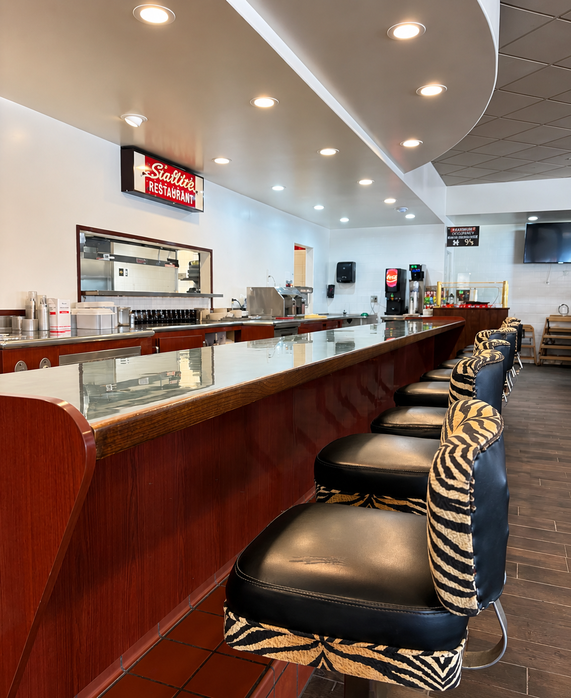

Three decades as a Port Hueneme tradition, a year-and-a-half dark, and a fresh chapter under new ownership. Here's how Roxsbury got here — and where it's going.

For roughly thirty years, Roxsbury Deli & Grill was a fixture of Port Hueneme — a neighborhood diner on Channel Islands Blvd, opened around 1994, directly across from the Navy base. Under original owner Andrew Papanicolaou, it became the kind of place families returned to for decades.
Generations of regulars named it a Neighborhood Favorite six years running (2017–2022). Reviewers still talk about the Reuben, the carrot cake, and a staff that felt like family. By the time it closed, the old listing carried 350+ reviews and nearly 200 photos — a record of a beloved institution.
In December 2023, a storm flooded the building and Roxsbury Deli & Grill went dark — for more than a year and a half, a Port Hueneme staple was simply gone.
Summer 2025, it came back. Under new ownership, the griddle is hot again at 443 W Channel Islands Blvd: the same breakfast crowd, the same burgers and deli sandwiches, the same corner across from the base that locals grew up with.
The menu is leaner than its heyday, but the heart of the place — fresh, hot, American comfort food served by people who remember your order — is right where it always was.
Andrew Papanicolaou opens Roxsbury Deli & Grill at 443 W Channel Islands Blvd — a 1950s-themed neighborhood diner across from the Port Hueneme base.
Named a Neighborhood Favorite on local community rankings six years in a row. Builds a loyal, multi-generational regular base.
A storm floods the building. Roxsbury closes its doors — beginning an 18-month hiatus.
Roxsbury reopens under new ownership, carrying the community's traditions forward with a refreshed, focused menu.
Dates compiled from public sources (Ventura County Star reopening report, Yelp/Nextdoor community records, LinkedIn). Some years are approximate where primary records are unavailable.